PROJECT / 03
E-Commerce API.
Backend REST API
A layered e-commerce backend with a product catalog, Redis-powered baskets and response caching, order processing, Stripe PaymentIntents, and a separate administration dashboard.
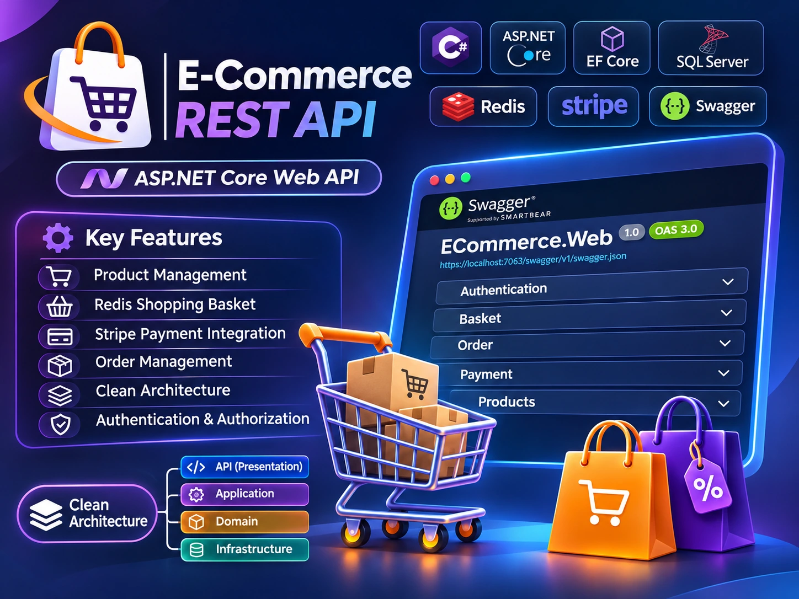
- 16 REST API Endpoints
- 8 Solution Projects
- 2 SQL Server Databases
- .NET 8 Web API Target
The endpoint count covers distinct HTTP method and route pairs in the Web API controllers. The separate MVC dashboard has its own actions.
Project overview
Catalog to order
The API supports account registration and sign-in, product discovery, and basket management. Authenticated customers can prepare a card PaymentIntent and create or retrieve their orders. A delivery-method endpoint lists shipping options.
Store operations
The MVC application provides a separate interface for managing products, brands, and roles. The two hosts share data-access code. SQL Server holds durable catalog, order, and identity data, while the Web API uses Redis for expiring basket state and cached responses.
Technology stack
ECommerce.Web targets .NET 8. Admin.Dashboard targets .NET 9. The persistence project uses the EF Core 9 SQL Server provider.
Hosts and persistence
Integrations and tooling
Sources Web API project · Dashboard project · Persistence project
System architecture
The layered solution separates controllers, business workflows, contracts, and storage adapters. The diagram follows direct project references and preserves the names used in the solution file.

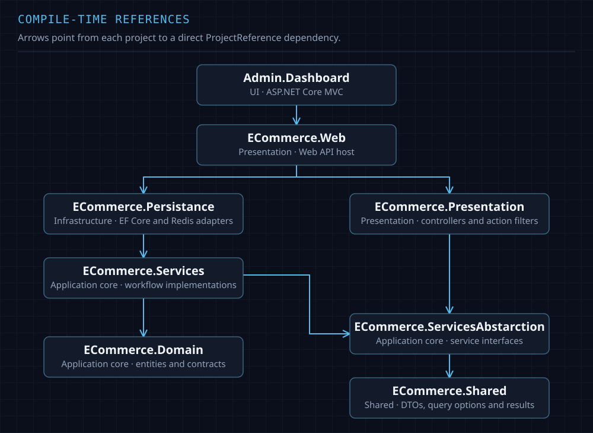

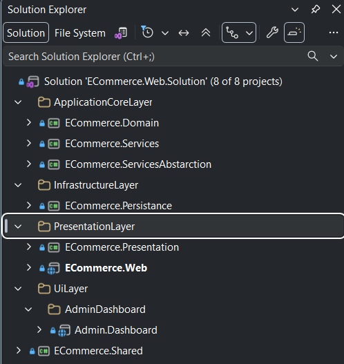
Runtime request flow
The API host routes HTTP requests to ECommerce.Presentation controllers, which call injected service interfaces. Implementations use domain contracts backed by EF Core or Redis repositories. The MVC dashboard has its own controllers and views and accesses the registered repositories and Identity stores in-process.
Sources Solution file · API composition root · MVC composition root
Database design
The migrations and supplied SQL Server references show 14 application tables and two __EFMigrationsHistory tables. Store and Identity each have their own EF Core context and migration history.
Store database
A brand and a type can each have many products, and a delivery method can serve many orders. An order can have many items. The migration makes OrderItem.OrderId nullable. Orders embeds the shipping address and stores an optional PaymentIntentId. OrderItem embeds a product snapshot whose Product_ProductId has no foreign key to the catalog.

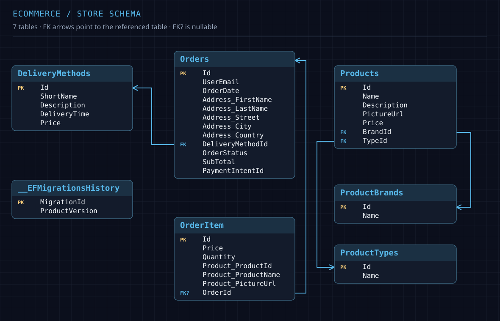
Identity database
UserRoles links users and roles through a composite key. A unique Addresses.UserId allows at most one address per user. Claims, logins, and tokens belong to the associated Identity user or role. Orders store the user’s email as a scalar value, so there is no cross-database foreign key.

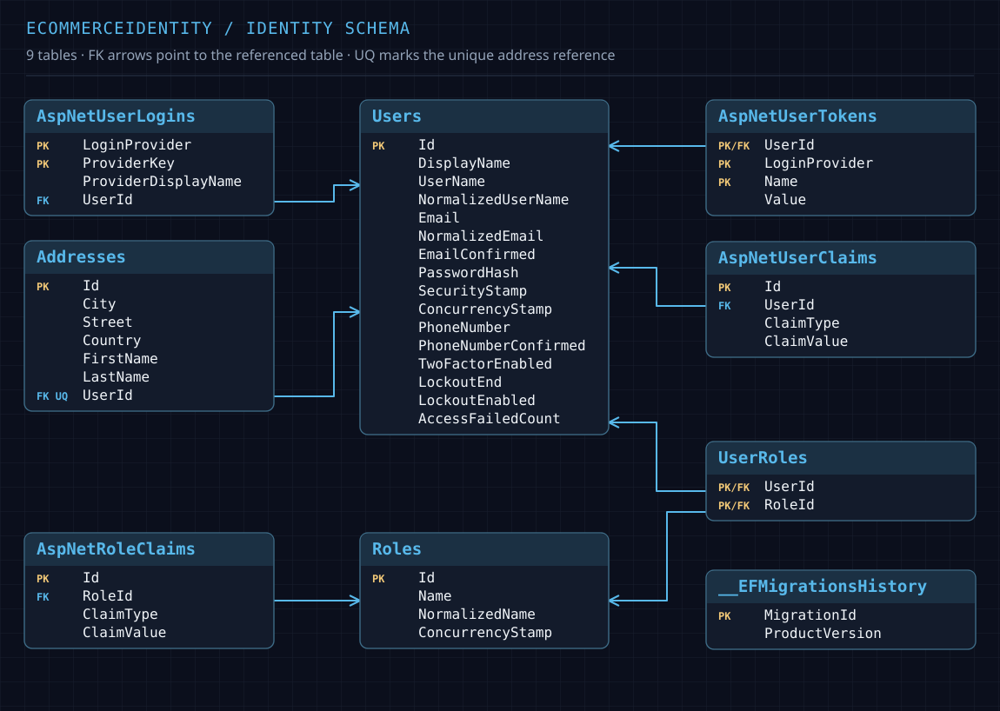
Sources Store migrations · Identity migration
Data storage architecture
StoreDbContext stores products, orders, and delivery data in ECommerce. StoreIdentityDbContext handles user and role data in ECommerceIdentity.
The API’s Redis repositories share a connection. Each use stores expiring JSON strings, with basket state separate from the product-response cache. Orders are written to SQL Server.

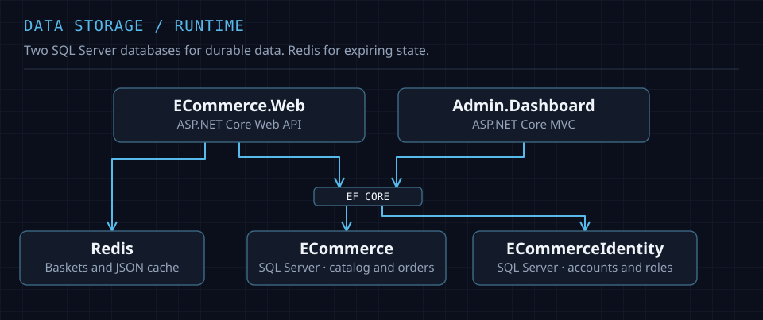
Core features
-
JWT authentication
ASP.NET Core Identity handles registration and password checks. JWT bearer auth protects the product list, account lookup, order operations, and PaymentIntent endpoint.
-
Catalog queries
Product specifications combine name search, brand and type filters, and name or price sorting. A separate count specification supplies pagination metadata.
-
Shopping baskets
The API creates or replaces baskets, retrieves them by ID, and deletes them. Redis holds the serialized basket document with a seven-day default expiry.
-
Orders and item snapshots
Orders use the authenticated email and retain quantities, unit prices, and product details at purchase time. Order queries scope results to the same email.
-
Delivery methods
The API lists delivery options. Order creation resolves the selected delivery method, and the payment service adds the basket’s delivery fee to the intent amount.
-
Stripe integration
The payment service reprices the basket from SQL Server, creates or updates a card PaymentIntent, and saves the returned reference on the basket.
-
Redis response cache
An action filter caches successful product-list responses as JSON. Requests with the same path and query values can reuse the cached result for five minutes.
-
Administration dashboard
A separate MVC host provides product and brand management, role maintenance, and role assignment for existing users.
Redis integration
Response cache
RedisCacheAttribute builds a key from the request path and appends query keys and values in key order. A hit returns the stored JSON as HTTP 200 before the controller action runs. On a miss, the action runs and CacheServices serializes a successful result. The filter sets a five-minute expiry.
The local capture followed an authenticated product-list request. Redis Insight shows /api/Products as a STRING with product and pagination JSON and 251 seconds of TTL remaining.

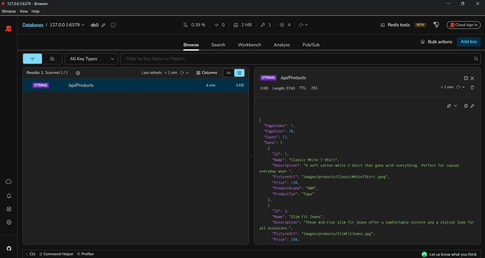
Shopping basket storage
Creating or updating a basket serializes the full document under its basket ID and sets a seven-day default expiry. Retrieval reads and deserializes that key, and deletion removes it. The repository handles temporary baskets, while SQL Server keeps orders.
The captured portfolio-basket STRING contains two Classic White T-Shirts at a unit price of 120. Redis Insight shows 604,735 seconds remaining after the basket was created through the API.

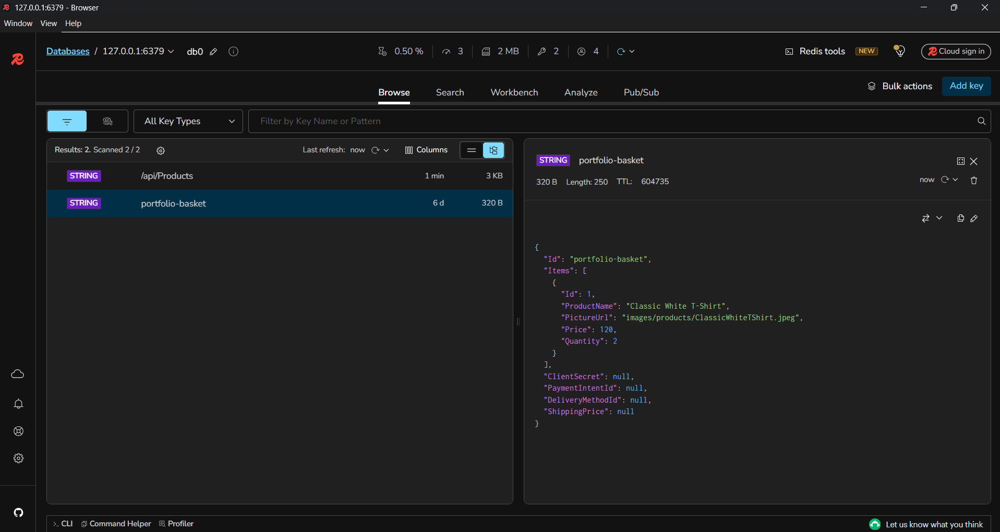
Local Redis in Docker
The verification session ran Redis from redis:7-alpine in ecommerce-redis, bound to 127.0.0.1:6379. PING returned PONG, and Redis Insight showed the keys, JSON values, and TTLs. Docker ran only the Redis service.
Sources Cache action filter · Cache service · Basket repository
Stripe payment integration
The authenticated POST /api/Payment/{basketId} action reads the basket from Redis, refreshes product prices from the catalog, and adds the fee for the basket’s delivery method. It creates a USD card PaymentIntent or updates the amount on an existing intent, then writes the basket back to Redis.
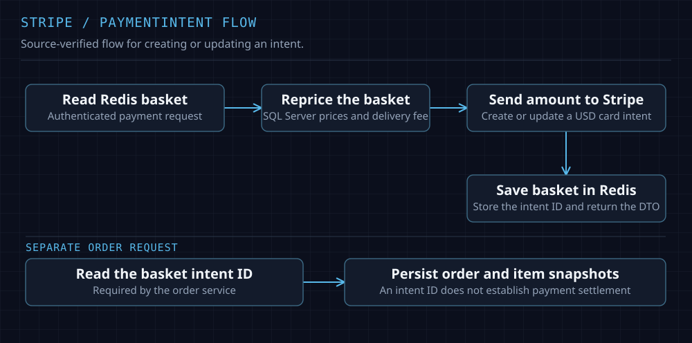
Intent creation and payment status
Order creation requires an intent ID and associates it with the order. The status model includes pending, payment received, and payment failed states, but the reviewed API implements neither payment confirmation nor webhook-driven status changes. Stripe behavior is supported by source review. The local testing session did not complete a payment transaction.
Sources Payment service · Order service
Design patterns and practices
- Generic repository and Unit of Work
GenericRepositoryprovides typed EF Core operations.UnitOfWorkgives the store repositories a shared context and saves changes together.- Specification Pattern
- Product specifications combine criteria, includes, ordering, and paging.
SpecificationEvaluatorapplies those rules to an EF query. The count specification reuses filters without applying paging. - Service layer and dependency injection
- The hosts compose service implementations and persistence dependencies. API controllers consume service interfaces and delegate business operations.
- DTO mapping and typed results
- AutoMapper translates entities to DTOs. The base API controller turns typed service results into HTTP responses and problem details.
- Central error handling
- The Web API registers exception middleware for errors that escape controller and service result handling.
- Response caching
- The product-list action uses a Redis action filter, keeping cache lookup and response serialization outside the catalog service.
Sources Unit of Work · Specification evaluator · API base controller
Admin dashboard
The .NET 9 ASP.NET Core MVC host uses Identity sign-in and separate Razor views. Its controllers list, create, edit, and delete products, and list, create, and delete brands. The dashboard can list users, change their role assignments, and list, create, rename, or delete roles.
The local verification session loaded the dashboard login page. The supplied Brands capture shows the existing list and add/delete controls. The other dashboard operations were verified in the controller and view source.

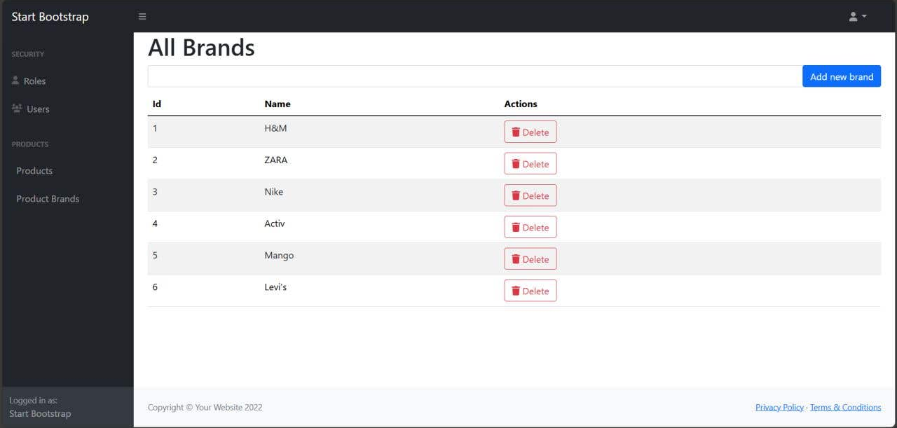
Sources Dashboard controllers · Dashboard views
API documentation
The supplied development Swagger captures cover all five REST controller groups. The endpoint breakdown comes from the source and counts each HTTP method and route pair once.
- Authentication · 4
- Register, sign in, check email existence, and retrieve the current user.
- Basket · 3
- Retrieve by ID, create or update, and delete.
- Order · 4
- Create, list the current user’s orders, find one order, and list delivery methods.
- Payment · 1
- Create or update a Stripe PaymentIntent for a basket.
- Products · 4
- List products, retrieve one product, list brands, and list types.

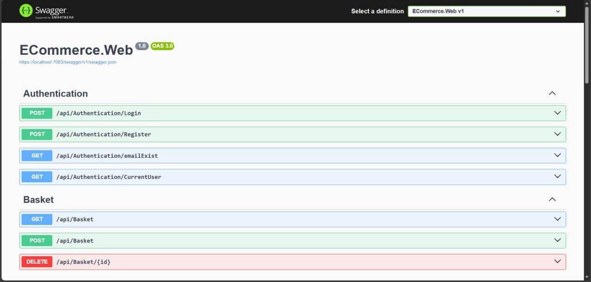

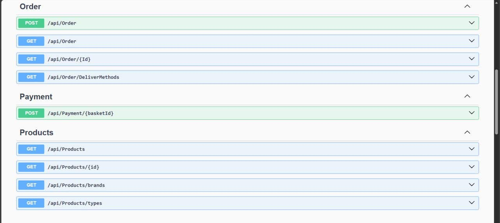
Source Web API controllers
Manual API testing
Authenticated product retrieval
The local session reported HTTP 401 for the initial unauthenticated GET /api/Products. After signing in, Postman sent a bearer token and recorded 200 OK, page 1, page size 10, and 13 matching products.

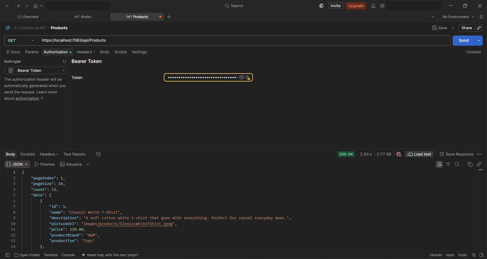
Shopping basket creation
POST /api/Basket returned 200 OK for portfolio-basket with two Classic White T-Shirts. The Redis Insight capture confirms the resulting stored state. Retrieval, update, and deletion capabilities were reviewed in source.

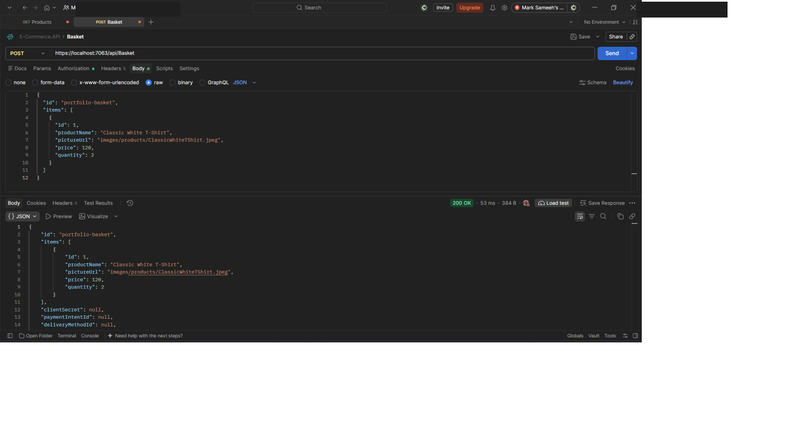
Technical challenges and maintenance
- Keeping order details stable
- The order service reloads current products when placing an order and stores name, image, unit price, and quantity on each item. Subsequent catalog edits do not change the stored item snapshots.
- Reusing catalog filters
- The product list and count specifications share filter criteria. The page-1 capture confirms pagination metadata, and the current page-index getter always returns 1.
- Coordinating data with Stripe
- The basket’s intent ID links the payment setup and order creation paths. The order service looks up a prior order with that ID before saving the replacement. Intent creation alone leaves settlement unverified.
- Maintaining dependencies across hosts
- The maintenance commit upgraded AutoMapper from 15.1.0 to 15.1.4 and removed the legacy
Microsoft.AspNetCore.Mvc.Core2.3.0 package, retaining theMicrosoft.AspNetCore.Appframework reference.
Dependency audit and Release verification
The recorded dotnet list package --vulnerable --include-transitive audit reported no known vulnerable packages across the eight projects from the sources available at the time. The maintenance removed the reported transitive findings involving Microsoft.AspNetCore.WebUtilities and Newtonsoft.Json. The Release build succeeded with nullable-reference warnings remaining, and both hosts started locally.
Sources Dependency maintenance commit · Product query parameters